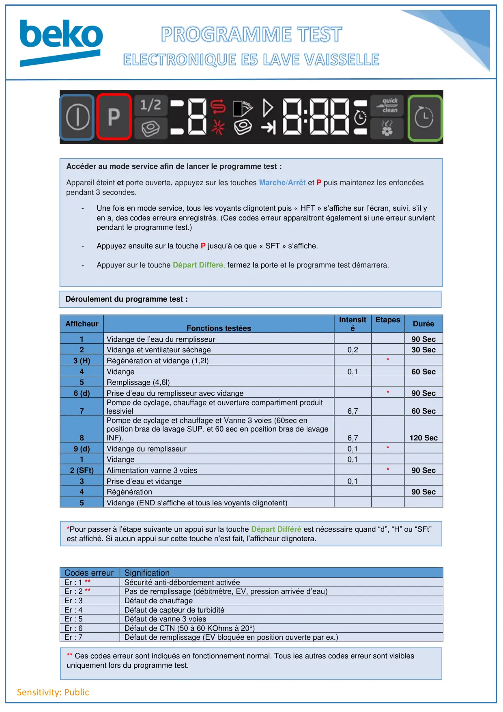
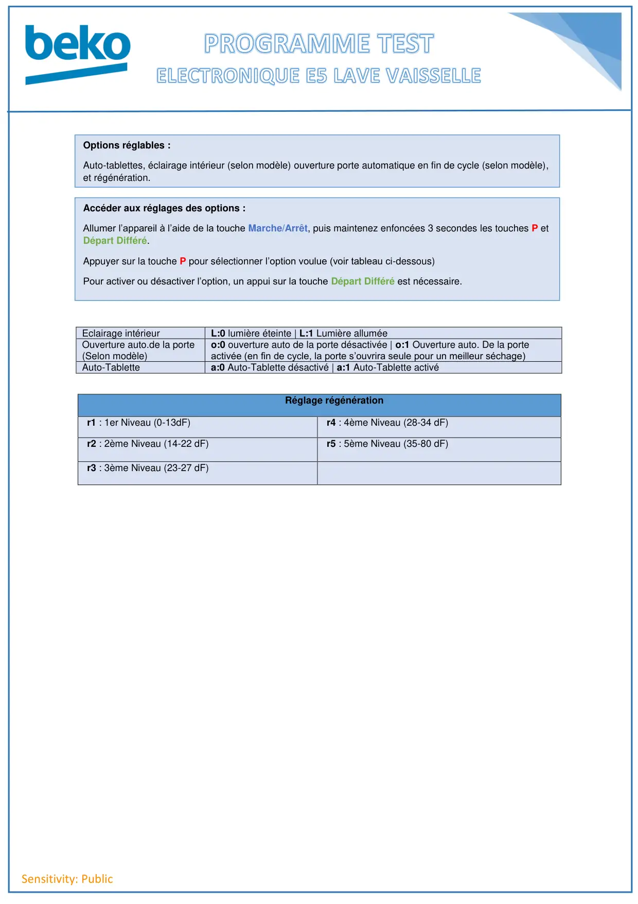

Progr.Test Réglages lave vaisselle E5 Fr

Sensitivity: PublicCodes erreurSignificationEr : 1 **Sécurité anti-débordement activéeEr : 2 **Pas de remplissage (débitmètre, EV, pression arrivée d’eau)Er : 3Défaut de chauffageEr : 4Défaut de capteur de turbiditéEr : 5Défaut de vanne 3 voiesEr : 6Défaut de CTN (50 à 60 KOhms à 20°)Er : 7Défaut de remplissage (EV bloquée en position ouverte par ex.)AfficheurFonctions testéesIntensitéEtapesDurée1Vidange de l’eau du remplisseur90 Sec2Vidange et ventilateur séchage0,230 Sec3 (H)Régénération et vidange (1,2l)*4Vidange0,160 Sec5Remplissage (4,6l)6 (d)Prise d’eau du remplisseur avec vidange*90 Sec7Pompe de cyclage, chauffage et ouverture compartiment produitlessiviel6,760 Sec8Pompe de cyclage et chauffage et Vanne 3 voies (60sec enposition bras de lavage SUP. et 60 sec en position bras de lavageINF).6,7120 Sec9 (d)Vidange du remplisseur0,1*1Vidange0,12 (SFt)Alimentation vanne 3 voies*90 Sec3Prise d’eau et vidange0,14Régénération90 Sec5Vidange (END s’affiche et tous les voyants clignotent)Accéder au mode service afin de lancer le programme test :Appareil éteint et porte ouverte, appuyez sur les touches Marche/Arrêt et P puis maintenez les enfoncéespendant 3 secondes.-Une fois en mode service, tous les voyants clignotent puis « HFT » s’affiche sur l’écran, suivi, s’il yen a, des codes erreurs enregistrés. (Ces codes erreur apparaitront également si une erreur survientpendant le programme test.)-Appuyez ensuite sur la touche P jusqu’à ce que « SFT » s’affiche.-Appuyer sur le touche Départ Différé, fermez la porte et le programme test démarrera.Déroulement du programme test :*Pour passer à l’étape suivante un appui sur la touche Départ Différé est nécessaire quand “d”, “H” ou “SFt”est affiché. Si aucun appui sur cette touche n’est fait, l’afficheur clignotera.** Ces codes erreur sont indiqués en fonctionnement normal. Tous les autres codes erreur sont visiblesuniquement lors du programme test.
1 / 2
Sensitivity: PublicEclairage intérieurL:0 lumière éteinte | L:1 Lumière alluméeOuverture auto.de la porte(Selon modèle)o:0 ouverture auto de la porte désactivée | o:1 Ouverture auto. De la porteactivée (en fin de cycle, la porte s’ouvrira seule pour un meilleur séchage)Auto-Tablettea:0 Auto-Tablette désactivé | a:1 Auto-Tablette activéRéglage régénérationr1 : 1er Niveau (0-13dF)r4 : 4ème Niveau (28-34 dF)r2 : 2ème Niveau (14-22 dF)r5 : 5ème Niveau (35-80 dF)r3 : 3ème Niveau (23-27 dF)Options réglables :Auto-tablettes, éclairage intérieur (selon modèle) ouverture porte automatique en fin de cycle (selon modèle),et régénération.Accéder aux réglages des options :Allumer l’appareil à l’aide de la touche Marche/Arrêt, puis maintenez enfoncées 3 secondes les touches P etDépart Différé.Appuyer sur la touche P pour sélectionner l’option voulue (voir tableau ci-dessous)Pour activer ou désactiver l’option, un appui sur la touche Départ Différé est nécessaire.
2 / 2